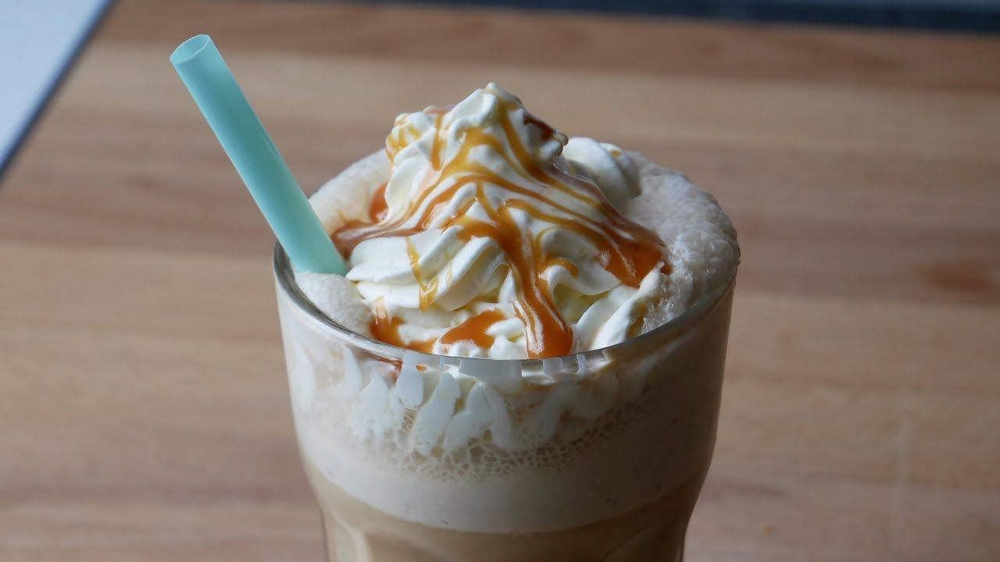

<link rel="stylesheet" href="../styles.css"/>
<main>
  <h1 id="header">Caramel Frappuccino</h1>
  <h3>Sweet beverage for all ocasions</h3>
  
  <p>The best way to make a summer day even sweeter!</p>
  <div>
    <h4>Ingredients</h4>
    <ul>
      <li>2 cups ice</li>
      <li>1 cup strongly brewed black coffee, cooled</li>
      <li>1 cup low-fat milk</li>
      <li>1/3 cup caramel sauce</li>
      <li>3 tablespoons white sugar</li>
      <li>1 whipped cream can</li>
    </ul>
  </div>
  <div>
    <h4>Instructions</h4>
    <ol>
      <li>Blend ice, coffee, milk, caramel sauce, and sugar together in a blender on high speed until smooth</li>
      <li>Pour into two 16-ounce glasses</li>
      <li>Add whipped cream on top</li>
    </ol>
  </div>
  <a href="#header">Return to top</a>
  <a href="../index.html">Return to main page</a>
</main>